Profesyonel SSH & sunucu yöneticisi — şifreli tek dosya, entegre terminal, SFTP, port tünelleri, filo paneli ve çoklu komut. Termius'tan daha iyi, tamamen senin.
Tüm sunucuların AES-256-GCM ile tek dosyada. Master parola cihazından çıkmaz.
xterm.js tabanlı çoklu sekme, arama, otomatik yeniden bağlanma.
Tüm sunucuların CPU/RAM/disk durumu canlı, tek ekranda komuta merkezi.
Bir komutu onlarca sunucuda aynı anda çalıştır, çıktıları yan yana gör.
Dosya transferi + local/remote/dynamic port forwarding.
Konteyner/servis başlat-durdur, süreç listesi, canlı log akışı.